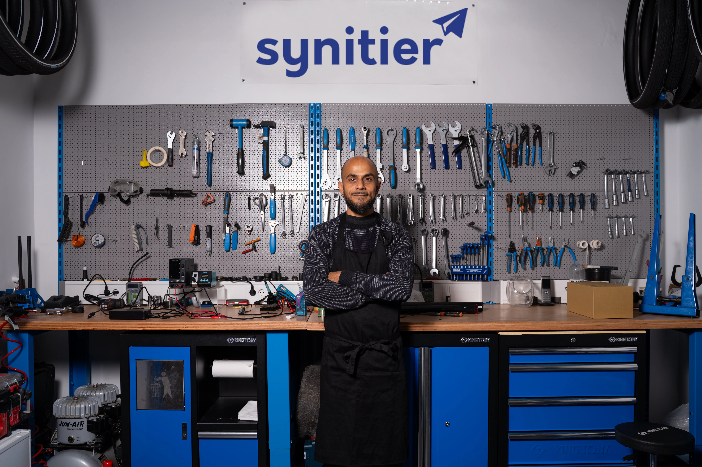
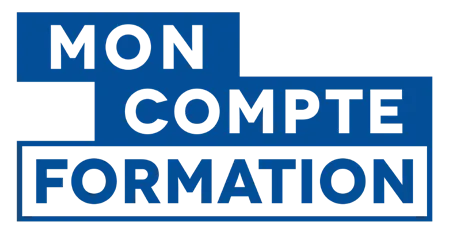
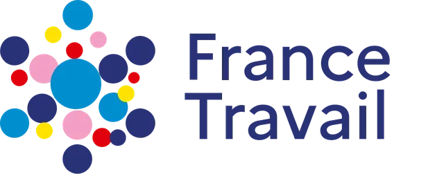
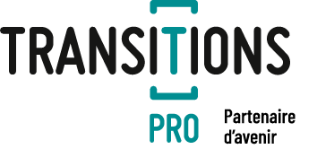

La mobilité douce,
l'avenir des déplacements
Devenez technicien réparateur vélos, vélos à assistance électrique, trottinettes électriques : un métier concret, utile et finançable
Un apprentissage concret,
dans un vrai atelier
Vous souhaitez apprendre à entretenir, diagnostiquer, réparer ou remettre en état des vélos, vélos à assistance électrique ou trottinettes électriques ? Nos formations vous plongent au coeur de la mobilité urbaine, avec un programme ancré dans la réalité du terrain.
Chez Synitier, nous sommes persuadés que tout le monde peut apprendre un vrai métier à tout âge. Les sessions sont adaptées à votre rythme, encadrées par des formateurs experts et orientées vers l'emploi dès le premier jour.

Cette formation est faite pour vous
Peu importe votre point de départ, nous adaptons notre accompagnement à votre situation
Vous souhaitez
créer votre activité
Ouvrir votre propre atelier ou développer une activité indépendante dans la réparation.
Vous êtes
en reconversion
Envie de changer d'horizon et d'apprendre un métier manuel, utile et concret ? Synitier vous accompagne de A à Z.
Vous souhaitez
apprendre un métier
Acquérir un savoir-faire concret dans la réparation de vélos et mobilités électriques, accessible sans prérequis.
Vous travaillez
déjà dans le cycle
Montez en compétence sur l'électrique et l'électronique embarquée pour répondre aux nouvelles demandes du métier.
Vous préparez
votre retraite
Maintenir une activité, constituer un complément de revenus ou simplement continuer à apprendre : la formation s'adapte à vous.
Pourquoi choisir Synitier
Un organisme humain, terrain et tourné vers votre réussite
Accessible à tous
Aucun prérequis technique.
Nous nous adaptons aux personnes en situation de handicaps
Formation individualisée
Chaque parcours est adapté à votre projet, votre rythme et vos objectifs personnels ou professionnels
Apprentissage en atelier
Vous apprendrez en pratiquant sur des cas concrets qui reflètent la réalité du métier
Formateur de terrain
Nos formateurs sont des virtuoses de la réparation qui transmettent une expertise réelle.
Retour rapide vers l'emploi
Nous vous accompagnons dans votre recherche d'emploi : immersion en atelier, stage, entretiens d'embauche
Suivi tout au long
Feuilles de présence, fiches de compétences, quiz, mises en situation sur véhicules réels et formulaires d'évaluation
Découvrez l'atelier de l'intérieur
Voyez concrètement ce que vous vivrez dans votre formation Synitier
Le mot du formateur

Le mot du responsable

Financements possibles avec



Prêt à vous lancer ?
Nous échangeons sur votre projet et nous vous aidons à trouver la meilleure solution, qu'il s'agisse du parcours, du financement ou du calendrier.
Nous contacter pour parler de votre projet